Physics-informed neural network for population dynamics
A Physics-Informed Neural Network (PINN) is a neural network that incorporates knowledge about physical laws alongside data. These physical (or chemical, or biological) laws can be incorporated into the network in the form of differential equations. Among other things, PINNs can be used to estimate parameters of a differential equation based on observational data.
Last week, Dr. Riccardo Taormina gave a guest lecture in my organization in which he explained the workings and advantages of PINNs. In the accompanying workshop he used synthetic data to show that it is possible to estimate the parameters of differential equations of a harmonic oscillator and an advection–diffusion process.

I once read an article by Bob Carpenter about predator-prey population dynamics of hares and lynxes in Canada. The interesting thing of this article is that it uses actual observations rather than synthetical data. The author uses data for the number of pelts of these hares and lynxes obtained by Hudson’s Bay Company in the years 1900-1920 to estimate the parameters of a Lotka-Volterra model. He uses the statistical modeling software Stan to generate these estimates based on Markov-Chain Monte-Carlo. This gives posterior estimates (distributions), which elegantly account for measurement and estimation uncertainty. In the Joseph M. Mahaffy course Mathematical Modeling, the author uses an optimization routine to estimate the parameters of the Lotka-Volterra equations using the same dataset.
In this post, I will show that PINNs can also be used to estimate those parameters. Let’s get started!
Packages
We will use the Python language with packages Pandas to load the data, Torch to train the neural network and M:w plotlib for plotting.
%matplotlib inline
import pandas as pd
import torch
from torch import nn
from matplotlib import pyplot as pltThe data
The data can be downloaded from various places, all derived from http://www.math.tamu.edu/~phoward/m442/modbasics.pdf. I load it from here. The dataset consists of observations of lynxes and Hare pelts (in thousands) across the years 1900 to 1920.
url = "https://raw.githubusercontent.com/cas-bioinf/statistical-simulations/master/hudson-bay-lynx-hare.csv"
df = pd.read_csv(url, sep=",\\s", skiprows=2, index_col=0)
df| Lynx | Hare | |
|---|---|---|
| Year | ||
| 1900 | 4.0 | 30.0 |
| 1901 | 6.1 | 47.2 |
| 1902 | 9.8 | 70.2 |
| 1903 | 35.2 | 77.4 |
| 1904 | 59.4 | 36.3 |
| 1905 | 41.7 | 20.6 |
| 1906 | 19.0 | 18.1 |
| 1907 | 13.0 | 21.4 |
| 1908 | 8.3 | 22.0 |
| 1909 | 9.1 | 25.4 |
| 1910 | 7.4 | 27.1 |
| 1911 | 8.0 | 40.3 |
| 1912 | 12.3 | 57.0 |
| 1913 | 19.5 | 76.6 |
| 1914 | 45.7 | 52.3 |
| 1915 | 51.1 | 19.5 |
| 1916 | 29.7 | 11.2 |
| 1917 | 15.8 | 7.6 |
| 1918 | 9.7 | 14.6 |
| 1919 | 10.1 | 16.2 |
| 1920 | 8.6 | 24.7 |
The data follow a cyclical pattern in which increases in the population of hares are followed by increases in the lynx populations in the subsequent years.
df[["Hare", "Lynx"]].plot(figsize=(10,6), grid=True, xticks = df.index.astype(int)[::2], title="Hudson Bay Lynx-Hare Dataset", ylabel="Number of pelts (thousands)")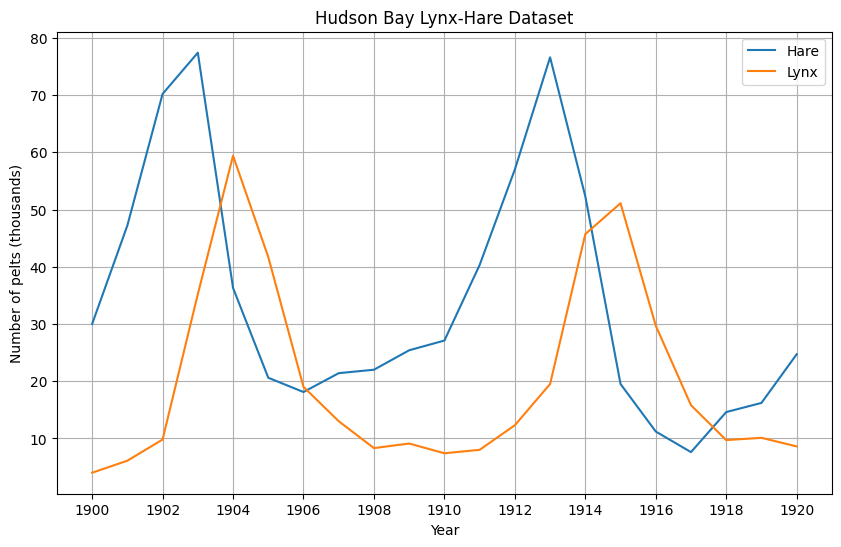
The Lotka-Volterra model
The Lotka-Volterra population model the change of predator and pray populations over time: - u(t)\ge0 is the population size of the prey species at time t (the hare in our case), and - v(t)\ge0 is the population size of the predator species (the lynx in our case).
By using such a model, some assumptions are made on the dynamics of these populations. We will not go into those here, but they can be found on the Wikipedia page. The population sizes over times of the two species are modelled in terms of four parameters, \alpha,\beta,\gamma,\delta\ge0 as
\frac{\mathrm{d}}{\mathrm{d}t} u = \alpha u - \beta u v \frac{\mathrm{d}}{\mathrm{d}t} v = \delta uv - \gamma v
It is these four parameters we will estimate in this post. They have the following interpretations: - \alpha is the growth rate of the prey population, - \beta is the rate of shrinkage relative to the product of the population sizes, - \gamma is the shrinkage rate of the predator population, - \delta is the growth rate of the predator population as a factor of the product of the population sizes.
In the Stan article, the author obtains posterior mean point estimates
\hat{\alpha} = 0.55,\quad \hat{\beta} = 0.028,\quad \hat{\gamma} = 0.80,\quad \hat{\delta} = 0.024, and in the Mathematical Modeling course, the author obtains \alpha^* = 0.55,\quad \beta^* = 0.028,\quad \gamma^* = 0.84,\quad \delta^* = 0.026.
To begin, we first set up some plotting functionality for keeping track of the training progress.
def plot_result(i, t, y, yh, loss, xp=None, lossp=None, params=None):
plt.figure(figsize=(8, 4))
plt.xlim(0, 40)
plt.ylim(0, 85)
# Data
plt.plot(t, y, "o-", linewidth=3, alpha=0.2, label=["Exact hare", "Exact lynx"])
plt.gca().set_prop_cycle(None) # reset the colors
plt.plot(t, yh, linewidth=1, label=["Prediction hare", "Prediction lynx"])
# Physics training ticks
if xp is not None:
plt.scatter(xp, 0*torch.ones_like(xp), s=3, color="tab:green", alpha=1, marker="|", label="Physics loss timesteps")
# Legend
l = plt.legend(loc=(0.56, 0.1), frameon=False, fontsize="large")
plt.setp(l.get_texts(), color="k")
# Title
plt.text(23, 73, f"Training step: {i}", fontsize="xx-large", color="k")
rmse_text = f"RMSE data: {int(torch.round(loss))}"
if lossp is not None:
rmse_text += f", physics: {int(torch.round(lossp))}"
plt.text(23, 66, rmse_text, fontsize="medium", color="k")
if params is not None:
plt.text(23, 60, params, fontsize="medium", color="k")
plt.axis("off")
plt.show()The inputs for the model are the timesteps t=0..20 corresponding to the years 1900-1920 and the outputs are the numbers of hares and lynxes.
df["Timestep"] = df.index - min(df.index)
t = torch.tensor(df["Timestep"].values, dtype=torch.float32).view(-1,1)
y = torch.tensor(df[["Hare", "Lynx"]].values, dtype=torch.float32)First, we define a simple dense feed-forward neural network using Torch.
class NN(nn.Module):
def __init__(self, n_input, n_output, n_hidden, n_layers):
super().__init__()
self.encode = nn.Sequential(nn.Linear(n_input, n_hidden), nn.Tanh())
self.hidden = nn.Sequential(*[nn.Sequential(nn.Linear(n_hidden, n_hidden), nn.Tanh()) for _ in range(n_layers-1)])
self.decode = nn.Linear(n_hidden, n_output)
def forward(self, x):
x = self.encode(x)
x = self.hidden(x)
x = self.decode(x)
return xWe can train neural network on the dataset (predicting the number of lynx and hares based on timestep t) and see that it is complex enough to be able to fit the dataset well. This takes a couple of seconds on my machine.
torch.manual_seed(123)
model = NN(1, 2, 8, 2)
optimizer = torch.optim.Adam(model.parameters(), lr=1e-3)
for i in range(50000):
optimizer.zero_grad()
yh = model(t)
loss = torch.mean((yh - y)**2)
loss.backward()
optimizer.step()
if i%10000 == 0:
yh = model(t).detach()
plot_result(i, t, y, yh, loss, None)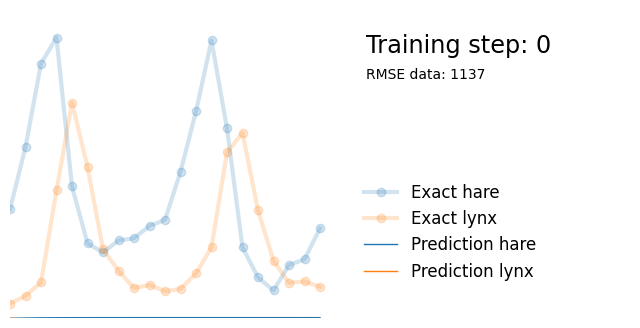
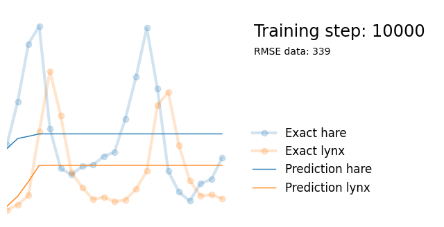
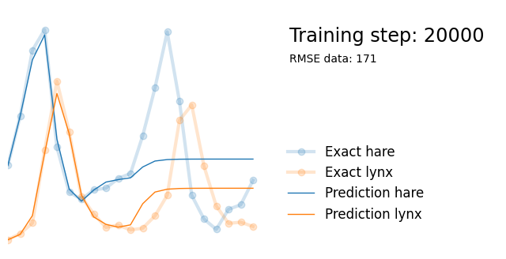
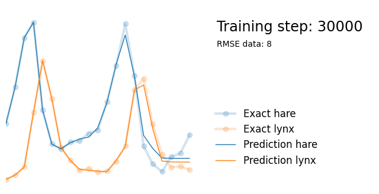
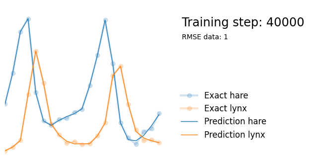
Next, we use exactly the same architecture but add parameters alpha, beta, gamma and delta reflecting the parameters in the Lotka-Volterra equations. We initialize them randomly between 0 and 1, and add them to the list of model paramters so that they are updated in the backpropagation steps.
torch.manual_seed(123)
model = NN(1, 2, 8, 2)
alpha = torch.rand(1, requires_grad=True)
beta = torch.rand(1, requires_grad=True)
gamma = torch.rand(1, requires_grad=True)
delta = torch.rand(1, requires_grad=True)
extra_parameters = [alpha, beta, gamma, delta]
parameters = list(model.parameters()) + extra_parameters
optimizer = torch.optim.Adam(parameters, lr=1e-3)We define t_physics; the range of timesteps on which we numerically evaluate the differential equations. In this case, we evaluate them every 0.1 year.
t_physics = torch.arange(0, len(t), 0.1, dtype=torch.float32).view(-1,1).requires_grad_(True)Training the PINN is identical to training the normal neural network, except that the loss function consists of a combination of the data loss and the physics loss. The data loss is identical to the loss of the previous neural network. For the physics loss, note that we can rewrite the Lotka-Volterra equations as
\frac{\mathrm{d}}{\mathrm{d}t} u - (\alpha u - \beta u v) = 0,
\frac{\mathrm{d}}{\mathrm{d}t} v - (\delta uv - \gamma v) = 0.
We calculate the mean of the square of the left-hand side across the values of t in t_physics, thus punishing the model if the equations are far away from 0. We use torch.autograd to estimate the partial derivatives, which means that these partial derivatives are based on what the neural network has learned so far. We calculate a weighted sum of the physics and data loss, using a weight of lambda1 set to 0.01. The value of this weight can matter quite a lot and depends on the relative sizes of the errors. Intuitively, it captures how much you trust the data versus the physical laws.
lambda1 = 1e-2
for i in range(50000):
optimizer.zero_grad()
# Data loss
yh = model(t)
data_loss = torch.mean((yh - y)**2)
# Physics loss
yhp = model(t_physics) # output of the model at the t_physics timesteps
u, v = yhp[:, 0], yhp[:, 1] # hare and lynx populations according to the neural network
dudt = torch.autograd.grad(u, t_physics, torch.ones_like(u), create_graph=True)[0].flatten() # time derivative of hare
dvdt = torch.autograd.grad(v, t_physics, torch.ones_like(v), create_graph=True)[0].flatten() # time derivative of lynx
dudt_loss = torch.mean((dudt - (alpha*u - beta*u*v))**2)
dvdt_loss = torch.mean((dvdt - (delta*u*v - gamma*v))**2)
physics_loss = dudt_loss + dvdt_loss
loss = data_loss + lambda1*physics_loss
loss.backward()
optimizer.step()
if i%10000 == 0:
yh = model(t).detach()
tp = t_physics.detach()
a, b, c, d = [round(param.item(), 3) for param in extra_parameters]
params = rf"$\alpha={a}, \beta={b}, \gamma={c}, \delta={d}$"
plot_result(i, t, y, yh, loss, tp, physics_loss, params)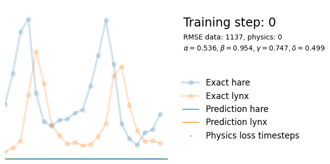
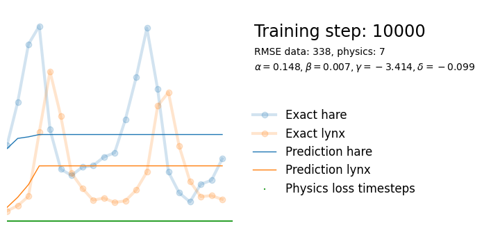
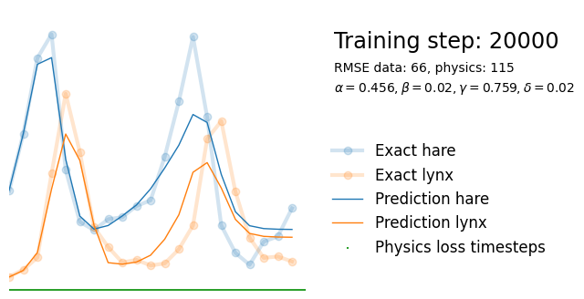
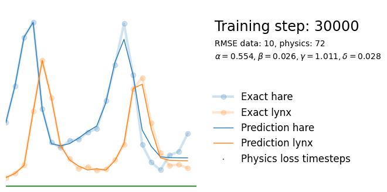
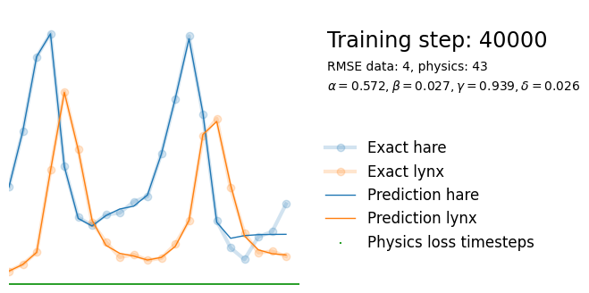
We see that the model is still able to fit well (albeit a little bit worse), and is able to estimate values for the parameters. Specifically, it estimates
\hat{\alpha} = 0.57,\quad \hat{\beta} = 0.027,\quad \hat{\gamma} = 0.94,\quad \hat{\delta} = 0.026, which are very close to the results of the other two approaches mentioned above. Only the estimate for \gamma deviates significantly from the other estimates.
However, this approach is very simple to implement and requires no knowledge about the differential equations or Bayesian modelling software.
Thanks for reading!